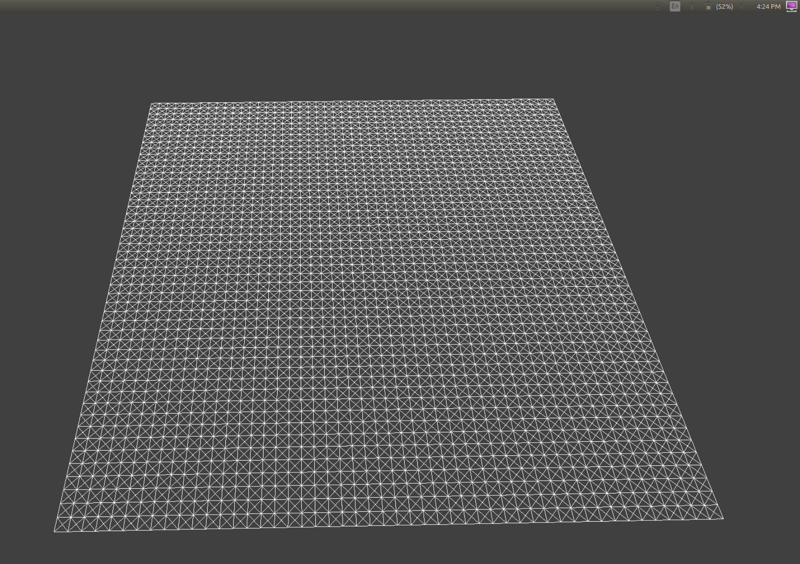

Overview
We created a cloth simulator using a point mass and spring model. Since such simulation is very expensive, we made
tradeoffs between physical accuracy and performance. Namely, we implemented Verlet integration that approximates the
properties of cloth without the complex calculations behind it.
Part I: Masses and Springs
|
No Shear
|
Shear Only
|

All Constraints
|
Part II: Simulation via Numerical Integration
Changing ks changes the drapeyness of the cloth. The larger the ks, the more the cloth resists
stretching and bending. This is visible through the significantly reduced sag with higher ks. Low ks makes the cloth more
elastic. The constraining of position updates, however, prevent the cloth from overstretching and thus, the cloth
does not sag further than a certain amount. One thing to note is that very high ks values will kick the mass
spring systems into positive feedback and cause the cloth to spaz out.
|
ks of 20000
|
ks of 5000
|
ks of 10
|
Density affects how heavy each point mass is. It has an exaclty opposite to ks. The less dense the cloth, the
more spring effects take hold. Thus, at low density, there is almost no sag. At high density, the cloth is
at maximum sag. Once again, at very low densities, spring forces become erratic as even the smallest errors
cause large ripple effects since the cloth has almost no mass.
|
density of 100
|
density of 15
|
density of 1
|
Damping slows all motion. Thus, it is a crude simulation of air resistance. Higher damping acts like denser atmospheres.
Another observation is that at 0 damping, thre is no decay in motion and all the oscillations from releasing the cloth
are visible.
Part III: Handling Collisions with Other Objects
 sphere with ks 500
sphere with ks 500
|
sphere with ks 5000
|
sphere with ks 50000
|
This is a perfect illustration of the effects of ks on stiffness of the cloth. The lower the ks, the more drapey the
cloth. The higher it is, the more stiff it is. This is because with a high ks, the springs better retain the original
shape of the cloth. Consequently, it refuses to bend as much.
|
In other news, peacefully at rest indeed.
|
Part IV: Handling Self-Collisions
|
The cloth falls
|
it unravels
|
slowly but surely
|
 almost there
almost there
|
finally at rest!
|
As previously stated, changing ks affects the stiffness of the cloth. In the self collision case, the effects can be seen
in the way the cloth folds. High ks has fewer and smoother folds. Low ks has many and rough folds. This is explained by
the restoring force of the springs. lower force means less resistance to folds.
|
ks 500
|
ks 500
|
|
ks 50000
|
ks 50000
|
The effects of modifying density are very similar (just the opposite). High density has a tendency for many folds that never
iron out. Low density bends less easily and uravels easily. High density also has a tendency to cause self clipping
when fps and samples is too low as it takes significantly more force to stop a denser point mass.
Part V: Additional cloth simulation features!
This isn't much a cloth simulation feature but it is nice none the less. The shaders for rendering the cloth is onesided
when calculating diffuse and phong. I modified it so that specular and diffuse work on both sides of the cloth. It makes
for a significantly more realistic looking render.
|
Original Shaders
|
Original Shaders
|
|
Modified Shaders
|
Modified Shaders
|